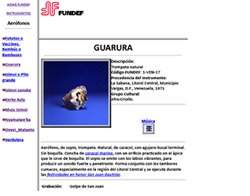
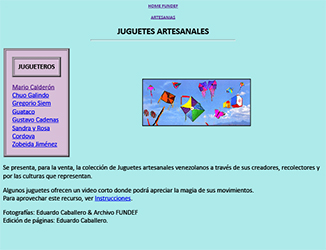

WEB
FUNDEF- Museo
Virtual de Instrumentos Musicales de
Latinoamérica y del Caribe (1995)
Este web, el primero en su especie en
Venezuela que incluyó fotos, sonidos y
videos, se realizó en conjunto con el
Instituto Venezolano de Investigaciones
Científicas - IVIC, a través de la
iniciativa del Dr. Claudio Mendoza, Físico,
y Jesús Quiroz, Asistente.
 
Quiroz, siendo apasionado ejecutante del
arpa llanera, realizó gran parte de la
programación html de este website, así como
también nos enseñó su programación básica.
Se realizó un gran bautizo en el Centro La
Estancia, Caracas, con la asistencia de todo
el gobierno cultural y diplomáticos de
muchos países, y luego se llevó por
invitación a la OEA, Washington, DC, y se
mostró en su plenaria a todos sus miembros.
Como consecuencia, FUNDEF recibió una
donación considerable de la OEA para la
adquisición de hardware computacional y se
convirtió en
ese tiempo en
líder de la construcción de páginas web y
de los servicios de internet,
asesorando y entrenando en la materia a
todos los organismos, fundaciones y entres
tutelados del CONAC.
Ciertos procedimientos como la activación de
audio y video, deben aún ser actualizados al
html actual porque en aquel entonces eran
muy diferentes –el formato mp3, por ejemplo,
estaba aún naciendo y se utilizó "RealAudio"
.ra!
Prensa:
“Fundef por Venezuela/ OEA discute desarrollo
de artesanías para Siglo XXI.” El Nacional (Caracas),
12/12/1995.
“Venezuela, a través de la …” El Globo (Caracas),
12/12/1995.
Gondelles, Ricardo. “Tradición y realidad virtual/La artesanía
llegó a Internet.” La Brújula/El Universal (Caracas),
14/1/1996.
Corona, Efraín. “La tradición latinoamericana convertida en Museo
Virtual.” El Globo (Caracas), 23/2/1996, 22.
Castillo, Yaneth Vargas. “El Primer Museo Virtual de Instrumentos
Musicales.” Fascinación (Caracas), 19/5/1996, 16-17.